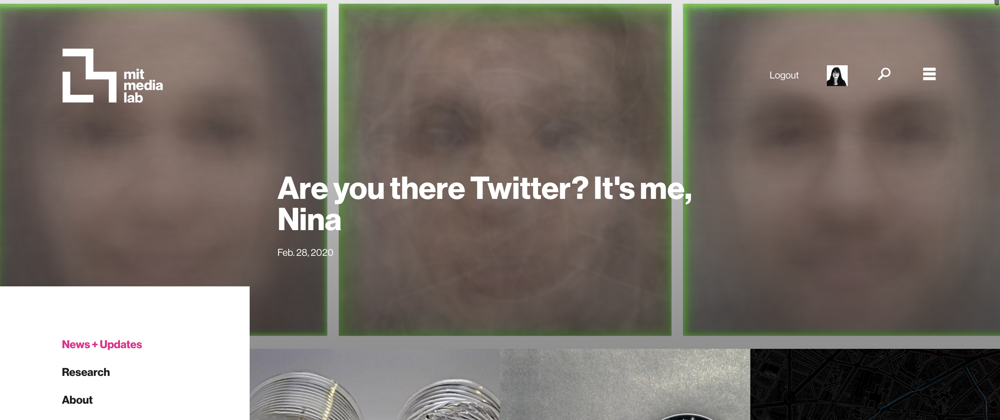
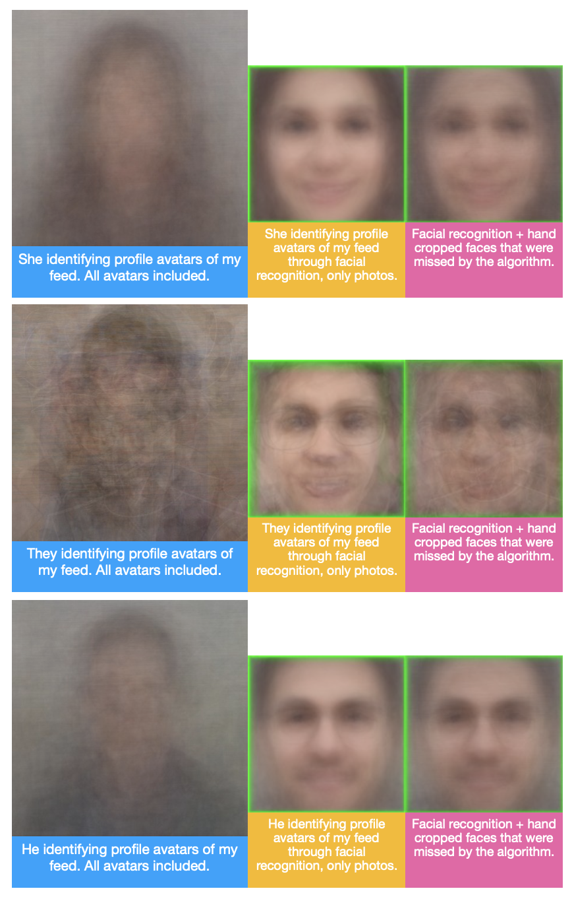

I think there is a lot of well meaning work around bias, but very few of us own and confront our own. I think that is extremely important and I would encourage anyone to do this.
This was a data exploration I did about my Twitter network and biases and how people I follow represent themselves through avatars and their faces. It was featured on the front page of the Media Lab. My article discusses the process, results, and also addresses the context around the image composites I made. The project is here, please check it out!
 